Evolution of Console
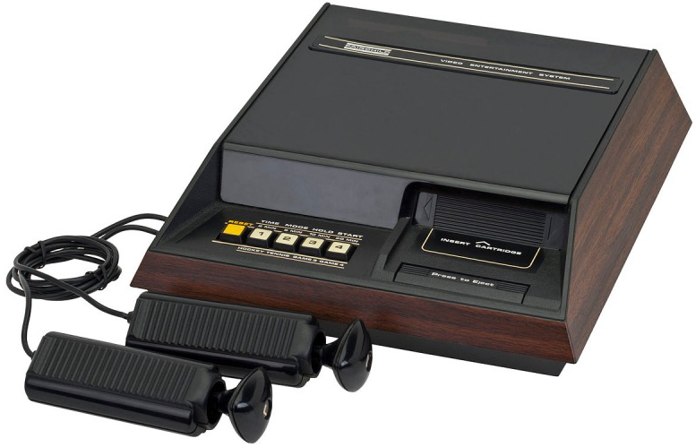
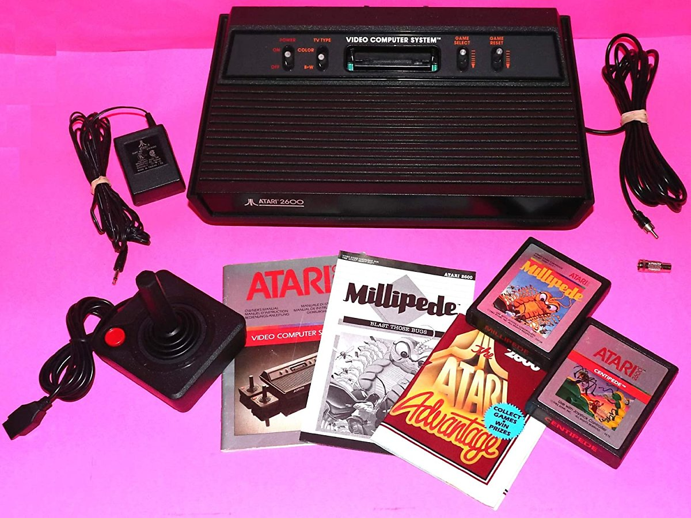
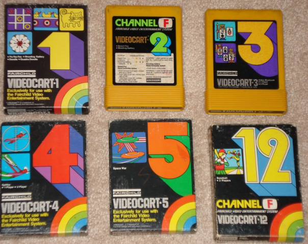
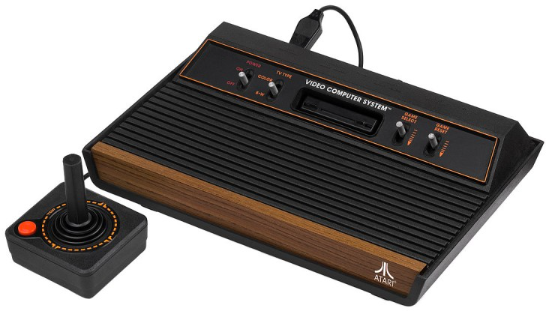
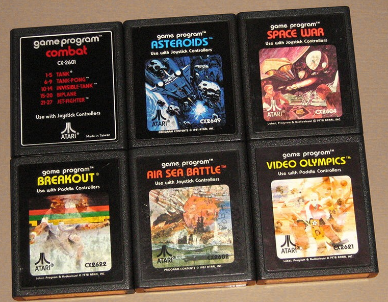
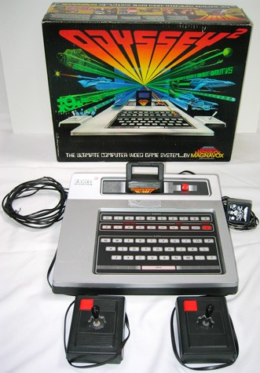
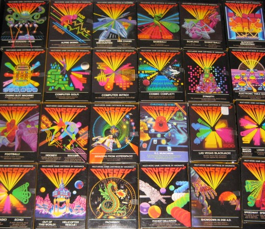
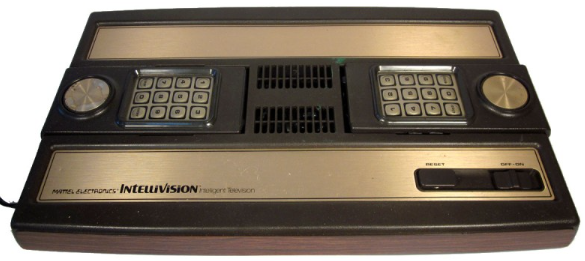
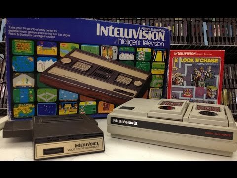
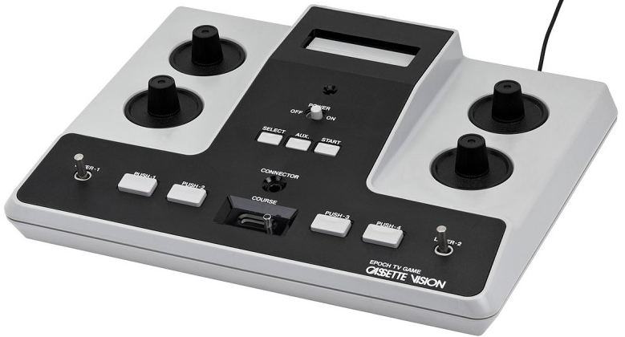
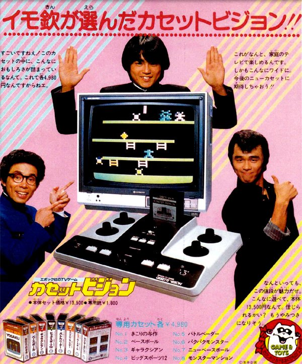
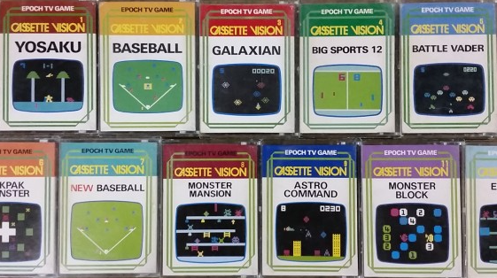
페어차일드 채널 F
_ 1976
셀로판지 교환 방식을 카트리지 교환으로 볼 수 있는 게임기, 최초의 롬
카트리지 도입 게임기
2세대의 포문을 열었지만, 1년 뒤 출시된 아타리 2600덕에 큰 성적 못
거둠.
아타리 2600
_ 1977
최초의 풀컬러 그래픽 게임기, 아타리를 7-80년대 게임 시장 절대 강자로
설 수 있게 해준 게임기
상업적으로 성공한 첫 번째, 아케이드 게임기
처음엔 펍과 같은 술집에서 시작했고 큰 인기를 끌었다. 그 인기를
바탕으로 가정용으로도 출시되었다.
마그나복스 오디세이2
_ 1978
마그나복스 오디세이 후속작, 게임뿐만 아니라 프로그래밍용으로도 사용
가능했다.
아타리 2600에도 불구하고 북미에서만 100만대가 넘게 팔렸다.
인텔리비전
_ 1979
미국 IT 회사, 마텔이 게임기 시장에 뛰어들어 제작한 게임기
최초의 16 비트 타이틀을 갖고 있지만 다른 8 비트 게임기보다 뛰어난
모습을 보여주지 못하며 비트수 = 성능이라는 공식이 성립하지 않는다는 걸
보여준 게임기
카세트 비전
_ 1981
에폭이 내놓은 2세대 게임기, 다른 게임기들과는 차별화된 저렴한 가격으로
대중에게 어필했다.
게임기 본체에 CPU가 들어가는 다른 게임기들과는 다르게 롬 카트리지마다
CPU를 넣는 특이한 방식 게임기였다.